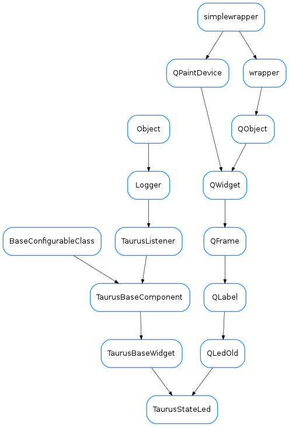

TaurusStateLed¶

-
class
TaurusStateLed(parent=None, designMode=False)[source]¶ Bases:
taurus.qt.qtgui.display.qled.QLedOld,taurus.qt.qtgui.base.taurusbase.TaurusBaseWidgetA led widget displaying the state tango attribute value
Deprecated since version 2.0: Use
taurus.qt.qtgui.display.TaurusLedinstead.-
DEVICE_STATE_DATA= {tango._tango.DevState.ON: (0, 1), tango._tango.DevState.OFF: (1, 1), tango._tango.DevState.CLOSE: (0, 1), tango._tango.DevState.OPEN: (0, 1), tango._tango.DevState.INSERT: (0, 1), tango._tango.DevState.EXTRACT: (0, 1), tango._tango.DevState.MOVING: (0, 0), tango._tango.DevState.STANDBY: (0, 3), tango._tango.DevState.FAULT: (0, 2), tango._tango.DevState.INIT: (0, 3), tango._tango.DevState.RUNNING: (0, 0), tango._tango.DevState.ALARM: (0, 4), tango._tango.DevState.DISABLE: (1, 4), tango._tango.DevState.UNKNOWN: (1, 0), None: (1, 2)}¶
-
boolIndex¶
-
getFormatedToolTip(cache=True)[source]¶ The tooltip should refer to the device and not the state attribute. That is why this method is being rewritten
-
ledSize¶ valid values as 24 and 48
-
model¶ Returns the model name for this component.
Return type: :class:~`str` Returns: the model name.
-
useParentModel¶ Returns whether this component is using the parent model
Return type: :class:~`bool` Returns: True if using parent model or False otherwise
-